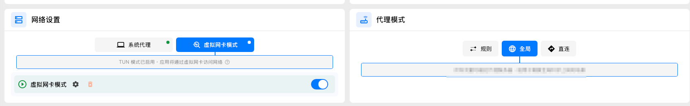
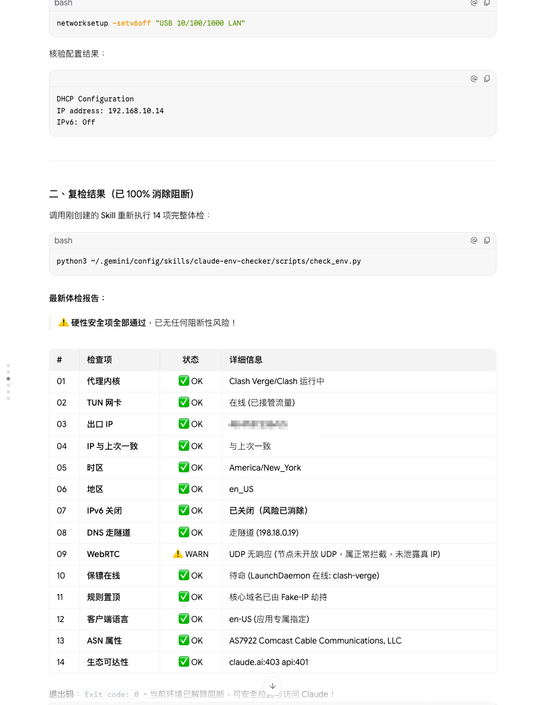
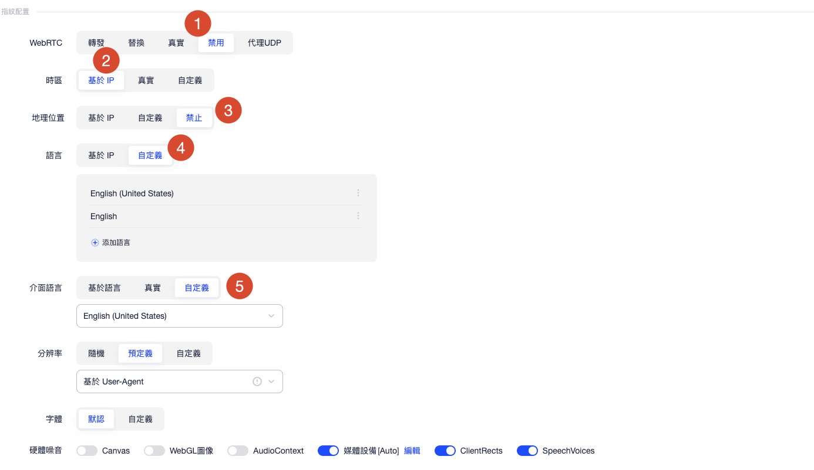
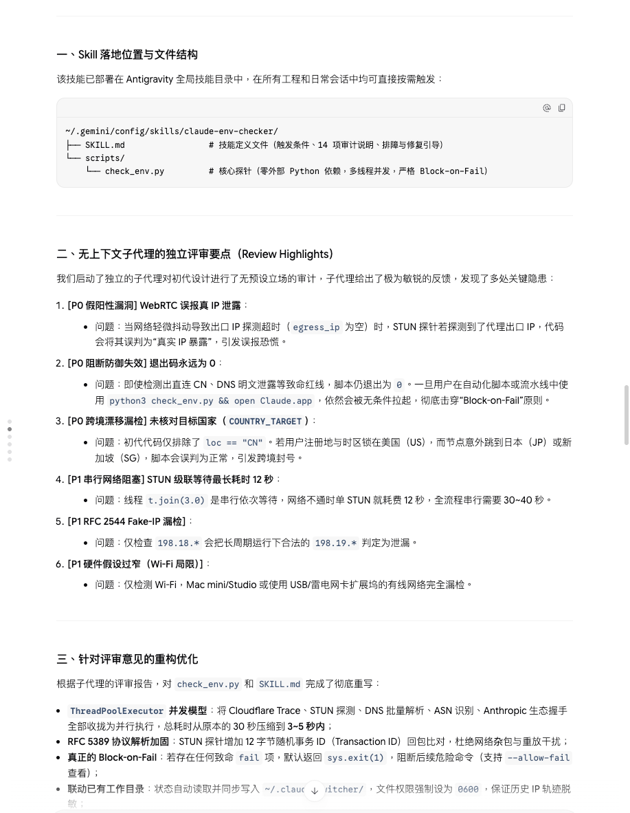

Claude Code 使用全流程 SOP（IP 一致性版）
流程总览
阶段一 · 准备 IP干净住宅 IP，买完先自检
→
阶段二 · 注册指纹浏览器 · OAuth 直登
→
阶段三 · 付款同一 IP 付款 / 续费
→
阶段四 · 日常启动前 14 项体检
全程只服务一件事：出口 IP 一致。平台一致性校验看的不是"有没有代理"，而是注册、收信、付款、日常对话、手机端这些行为像不像同一个地方的同一个人。
0. 四条总原则
| # | 原则 | 说明 |
|---|---|---|
| 1 | 一个账号，一条 IP | 注册、收验证邮件、付款、日常对话、手机端，全部走同一条住宅出口 IP，全程不漂移 |
| 2 | 全局 + TUN，拒绝分流 | 全局模式保证没有进程直连；TUN（虚拟网卡）接管所有流量，包括不走系统代理的程序。规则模式下的意外直连、系统代理形态下的绕过，都是 IP 混用的来源 |
| 3 | 启动前必检 | 任何情况下，启动 Claude Code 之前先跑 check_env.py。存在任何致命 fail 项则退出码为 1，禁止带病启动（--allow-fail 只允许在"只查看"场景使用） |
| 4 | 浏览器层少干预 | 网络层（TUN）已保证 IP / DNS 一致，指纹浏览器里不要再叠加额外的"防泄露"类增强开关，保持指纹自然 |
1. 阶段一：准备干净住宅 IP
1.1 选购要求
- 住宅 ASN：ISP 家宽段（如 AS7922 Comcast），避开机房段（AWS / GCP / OVH）和商业 VPN 段；
- 独享优先：避开多人共用的公共节点——共用人越多，这个 IP 的历史越脏；
- 国家固定：注册地 = 付款地 = 日常使用地（本 SOP 以美国 US 为例），节点不乱跳；
- UDP 行为心里有数：节点未开放 UDP 时，STUN 探测无响应属于正常拦截，WebRTC 检查项为 WARN 可接受（未泄露真实 IP 即可）。
1.2 买完先做两道自检
- 网页检测（DNS 泄露 / WebRTC 泄露 / IP 归属一次性看完）：ippure.com/en/Browser-WebRTC-Leak-Detect
- 本机 14 项体检：
python3 ~/.gemini/config/skills/claude-env-checker/scripts/check_env.py1.3 本机基线（一次配好，长期保持）
| 项 | 目标 | 做法 |
|---|---|---|
| 代理模式 | 全局 + TUN | 客户端里选「全局」+ 开启「虚拟网卡模式」（TUN） |
| IPv6 | 关闭 | networksetup -setv6off "USB 10/100/1000 LAN"（网卡名按实际改，Wi-Fi 则为 "Wi-Fi"） |
| 时区 | 与 IP 国家一致 | 如 America/New_York |
| 系统地区 / 语言 | 与 IP 国家一致 | 如 en_US / en-US |
| DNS | 走隧道 | TUN Fake-IP 接管，DNS 必须落在隧道内（198.18.x.x 属正常） |

1.4 14 项体检合格状态
| # | 检查项 | 合格状态 |
|---|---|---|
| 01 | 代理内核 | Clash Verge / Clash 运行中 |
| 02 | TUN 网卡 | 在线（已接管流量） |
| 03 | 出口 IP | 目标国家 IP |
| 04 | IP 与上次一致 | 一致（轨迹落盘 ~/.claude-switcher/，权限 0660） |
| 05 | 时区 | 与 IP 国家一致（如 America/New_York） |
| 06 | 地区 | 如 en_US |
| 07 | IPv6 | 已关闭 |
| 08 | DNS 走隧道 | Fake-IP 劫持（198.18.x.x） |
| 09 | WebRTC | UDP 无响应 / 未泄露真实 IP（节点不开 UDP 时 WARN 可接受） |
| 10 | 代理保活 | LaunchDaemon 在线 |
| 11 | 规则置顶 | 核心域名已被 Fake-IP 劫持 |
| 12 | 客户端语言 | en-US |
| 13 | ASN 属性 | 住宅 ISP（如 AS7922 Comcast Cable Communications） |
| 14 | 生态可达 | claude.ai:403 / api:401（可达即可，未带凭证时 401 是正常响应） |

2. 阶段二：注册（指纹浏览器）
2.1 Profile 定位
本 SOP 使用的指纹浏览器：AdsPower（推荐链接，感谢支持）
建一个专用指纹浏览器 profile，只做三件事：
- Claude 网页对话；
- Claude 注册；
- Claude 邮箱收发（验证邮件）。
其他任何网站、任何用途都不要进这个 profile。多账号 = 多 profile，一一对应。
2.2 指纹配置
| 配置项 | 取值 | 说明 |
|---|---|---|
| WebRTC | 禁用 | 指纹层彻底关掉 RTC，STUN 探测面为零 |
| 时区 | 基于 IP | 时区跟随出口 IP，不自定义 |
| 地理位置 | 禁止 | 不暴露地理信息 |
| 语言 | 自定义 | English (United States) + English |
| 界面语言 | 自定义 | English (United States) |
| 分辨率 | 预定义 | 基于 User-Agent 推导，不随机 |
| 字体 | 默认 | — |
| 硬件噪音 | Canvas 关 · WebGL 图像 关 · AudioContext 关 · 媒体设备 Auto · ClientRects 开 · SpeechVoices 开 | |
特别注意：浏览器里若有「防 RTC 泄露」「防 DNS 泄露」这类额外的防泄露增强开关，一律不开。网络层已由 TUN 全局兜底、DNS 已走隧道，浏览器层再叠加只会制造异常指纹。

2.3 注册动作
- 确认出口 IP 与历史一致（跑一次
check_env.py，或看面板）； - 在该 profile 内用 Google / Apple ID 直接 OAuth 注册，不要单独用邮箱注册；
- 验证邮件在同一个 profile 里收——绝不切到系统浏览器、手机邮件 App 或任何其他环境收信；
- 注册完成前不切节点。
2.4 关于"养号"
玄学养号（模拟浏览行为、隔几天再付款之类）见仁见智。本 SOP 不包含，本人也没有养。
3. 阶段三：付款与续费
- 渠道：Google Play（Android 端应用内订阅）或 Apple ID 礼品卡（iOS 端应用内订阅）；网页端付款可用 Google Pay；
- 铁律：付款会话的出口 IP 必须与注册 IP 完全一致——同一节点、同一出口，付款前后都不切；
- 配套一致：用来付款的 Google / Apple 账号地区、礼品卡区服，与 IP 国家保持一致（US IP → US 区账号 → US 区礼品卡）；
- 续费同理：每次续费都在同一 IP 下完成。
4. 阶段四：手机端（Claude Code 登录 / 套餐管理）
- 全局代理：手机用 TUN 类客户端开全局模式，不要分应用分流；
- 时区：跟随 IP 国家；
- 语言 / 地区：系统语言、地区一并改掉，与 IP 国家一致；
- 登录和套餐管理都在这个状态下进行。
5. 日常：每次启动 Claude Code
开代理（全局 + TUN）
↓
python3 check_env.py ← 14 项体检，Exit 0 才放行
↓
启动 Claude Code- 任何致命 fail → 按技能内的排障引导修复后重跑；禁止带 fail 强启（
--allow-fail仅限"只查看"场景）； - 体检状态自动写入
~/.claude-switcher/，历史 IP 轨迹可追溯——发现 IP 漂移能第一时间定位。
6. 红线速查
| 场景 | 红线 |
|---|---|
| 换节点 | 不要立刻使用账号；先确认新 IP 的国家与 ASN，IP 与上次不一致时先停下 |
| 收验证邮件 | 绝不在指纹浏览器之外的环境收 |
| 付款 | IP 与注册 IP 不一致时不要付款 |
| 代理模式 | 分流 / 直连状态下不碰 Claude |
| IPv6 | 开着就是绕过 TUN 的暗门，必须关 |
| 体检 | check_env.py 有 fail 就不启动 Claude Code |
附录：claude-env-checker 技能
- 位置：
~/.gemini/config/skills/claude-env-checker/（SKILL.md+scripts/check_env.py）； - 特性：14 项体检、并发执行（3–5 秒）、RFC 5389 STUN 协议解析、真正的 Block-on-Fail（存在致命 fail 即
exit 1，支持--allow-fail仅查看）、状态写入~/.claude-switcher/（权限 0660）、历史 IP 轨迹留痕； - 设计经独立评审修复了 6 项隐患：假阳性 WebRTC 泄露误报、阻断失效（退出码恒 0）、跨境漂移漏检、串行等待过长、RFC 2544 Fake-IP 漏检、仅覆盖 Wi-Fi 的假设。

获取与安装
- 仓库内目录：
claude-env-checker/（SKILL.md+scripts/check_env.py）； - 安装：把
claude-env-checker/整个目录拷贝到对应 Agent 的技能目录（如~/.gemini/config/skills/或~/.claude/skills/）； - 依赖：零外部 Python 依赖（纯标准库 + macOS 原生命令），仅支持 macOS；
- 协议：MIT（见仓库
LICENSE）。